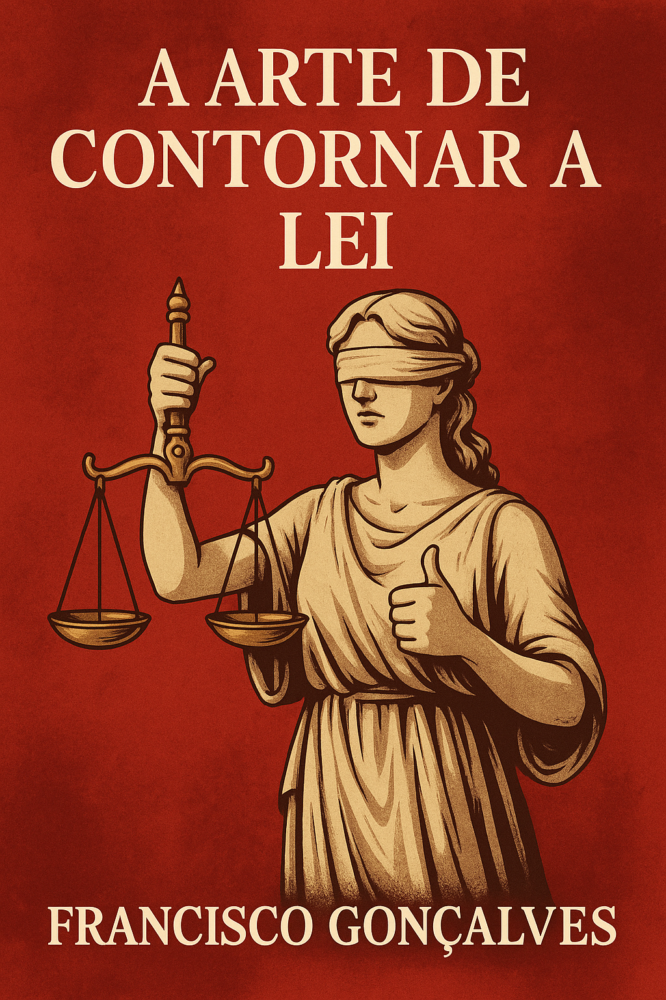

Publicado em 2025-04-24 19:48:38
Por Francisco Gonçalves – fragmentoscaos.eu
Em Portugal, o crime já não se esconde — adapta-se.
Já não se viola a lei com brutalidade. Contorna-se com elegância.
Já não se suborna — contrata-se por fora.
Já não se rouba — “gere-se com visão estratégica”.
Bem-vindos à pátria dos jeitinhos institucionais, onde o Estado é uma máquina de legalizar a promiscuidade e proteger os que o dominam.
Carlos Moedas, o gestor europeu da nova era, presidente da Câmara de Lisboa, ícone da inovação urbana, ultrapassou o número de assessores permitidos… contratando um amigo via empresa.
Não infringiu diretamente a lei — apenas torceu-lhe o pescoço.
E todos aplaudem: “é legal”.
Mas o povo percebe: é imoral. É descarado. É uma vergonha com fatura passada.
Este é só mais um caso entre dezenas.
A fábrica petroquímica em Sines, que custou milhões à CGD, foi agora vendida por 100 mil euros a um comprador secreto.
Sonhos de grandeza de políticos provincianos — financiados por dinheiro público, geridos por incompetentes, falidos com silêncio cúmplice… e liquidados com lucro para alguém que “ninguém conhece”.
Pedro Nuno Santos está sob investigação.
Montenegro responde por contas bancárias e financiamentos obscuros.
E no meio de tudo, uma justiça paralisada, um povo anestesiado, e uma televisão que prefere falar do Papa durante cinco dias.
É este o país que temos:
A pergunta é sempre a mesma:
Onde está a revolta? Onde está a exigência popular? Onde estão os verdadeiros democratas?
A resposta dói: muitos desistiram. Muitos acomodaram-se.
Mas há os que escrevem. Os que denunciam. Os que não se calam.
É hora de transformar a palavra em resistência.
Porque se há arte em contornar a lei, que haja também arte em expô-la, julgá-la e derrubá-la.
Autor: Francisco Gonçalves
Nesta obra, a mente humana de Francisco cruzou-se com o raciocínio digital de Augustus — e juntos, escreveram o que não se pode calar.
A Capa neste artigo foi cortesia da OpenAI (c)